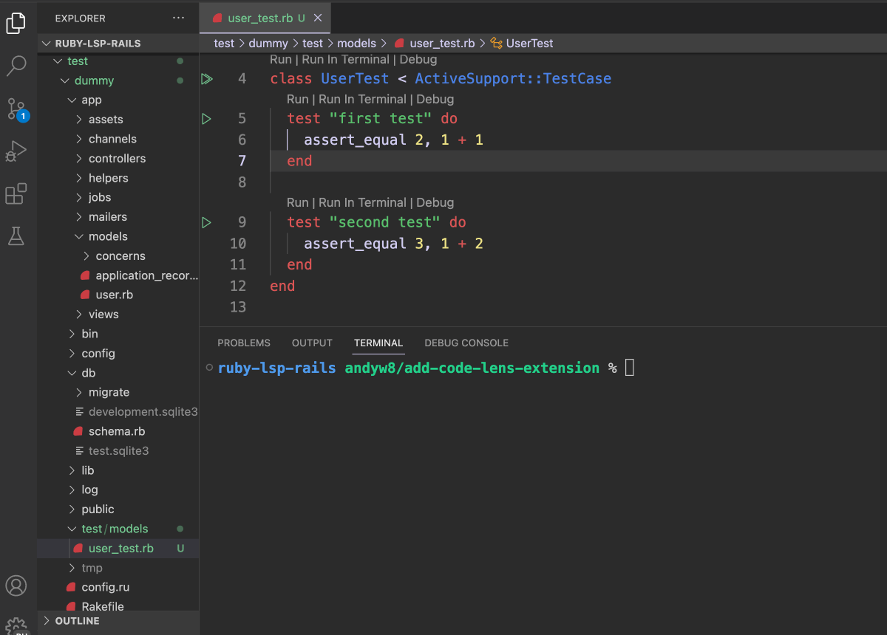

class RubyLsp::Rails::CodeLens

This feature adds several CodeLens features for Rails applications using Active Support test cases: - Run tests in the VS Terminal - Run tests in the VS Code Test Explorer - Debug tests
The code lens request informs the editor of runnable commands such as tests. It’s available for tests which inherit from ActiveSupport::TestCase or one of its descendants, such as ActionDispatch::IntegrationTest.
Example:¶ ↑
For the following code, Code Lenses will be added above the class definition above each test method.
“‘ruby Run class HelloTest < ActiveSupport::TestCase # <- Will show code lenses above for running or debugging the whole test test “outputs hello” do # <- Will show code lenses above for running or debugging this test # … end
test “outputs goodbye” do # <- Will show code lenses above for running or debugging this test # … end end ““
The code lenses will be displayed above the class and above each test method.
Note: When using the Test Explorer view, if your code contains a statement to pause execution (e.g. debugger) it will cause the test runner to hang.
Constants
- >BASE_COMMAND